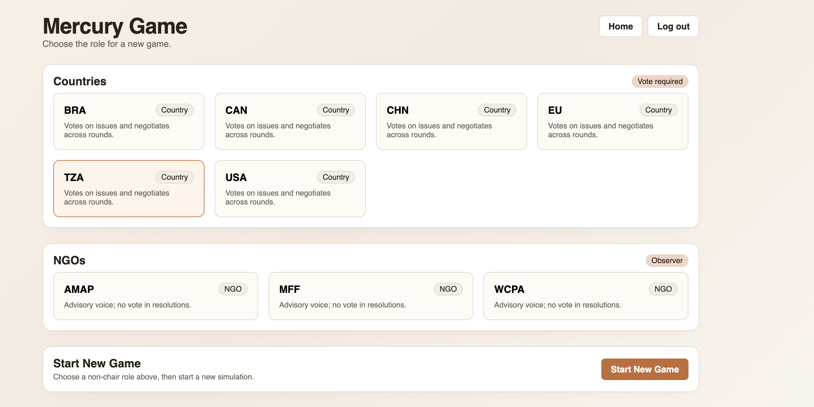
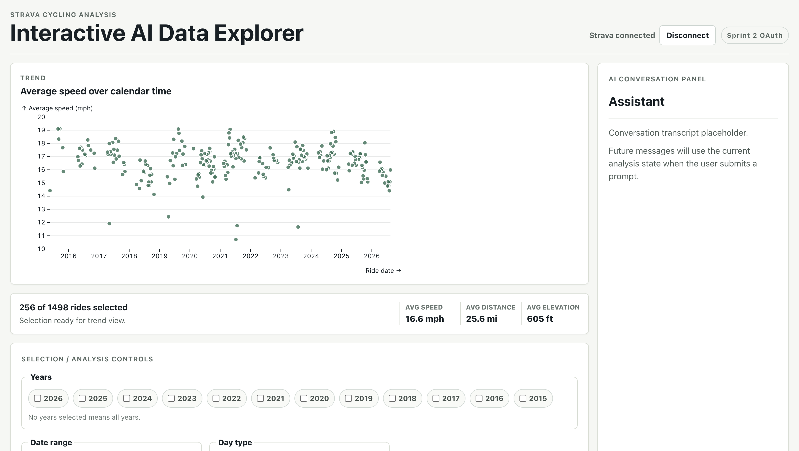

The Mercury Game: What and Why?
What is the Mercury Game? Why was it built and who is it for?
Software Engineer | Full-Stack & AI Applications
I came to software engineering through a love of literature and geography. I wanted a tool that would let readers place locations from books onto maps of the real world, so I tried to build it.
The first time I wrote code that displayed a carousel of images next to a pin on a map, my focus shifted. I took over a floundering computer science program at the college preparatory high school where I had been teaching literature and rebuilt it into a successful program. And, when I wanted more, I moved to the University of Arizona, to pursue a BS in Computer Science while working full time.
Returning to undergraduate studies after 20+ years leading classrooms has been a gift I had not expected at this stage in my life. It has given me an opportunity to sink into deep technical ideas-operating systems, networking, algorithms, and distributed programming-while experimenting with the AI tools that are rapidly changing how software is written. And I love the challenge.
I've spent most of my career trying to answer the same question, first in a classroom and now in code: how do you make something understandable without diminishing its complexity? What I've been after, in both jobs, is the version that respects how complicated the thing actually is and still meets someone where they are.
React | TypeScript | FastAPI | Supabase | OpenAI API | Render | Netlify

Negotiation simulation where a human plays alongside eight AI representatives for countries and NGOs debate mercury pollution policies.
Built as a full-stack application combining deterministic game logic with LLM-generated player outputs.
The Mercury Game: What and Why?
What is the Mercury Game? Why was it built and who is it for?
Strong Foundations: Testing, Deployment, and Persistence
How do development decisions ensure a stable product experience?
Placeholder teaser for a short technical writeup about the Mercury Game refactor.
React | TypeScript | Vite | Vercel AI SDK | OpenAI API | Strava API

Data application that allows a user to explore activity data visually and through natural language with an AI collaborator.
Designed with a shared analysis state for the visualization tools and the LLM, ensuring the conversations are grounded in current selections.
Interactive AI Data Explorer: What and Why?
What is the AI Data Explorer? Why was it built and who is it for?
Deployed AI: Building with the Vercel AI SDK
Short video description placeholder for outputs and validation.
Placeholder teaser for a short technical writeup about grounding AI interactions in application state.